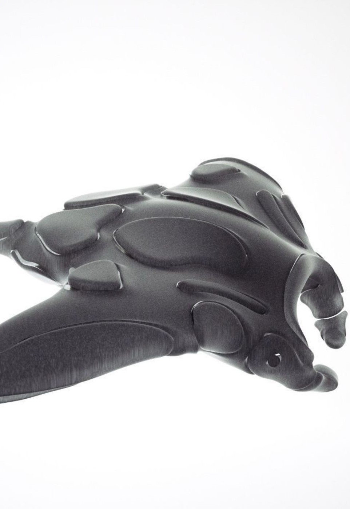

WHY MOBULAR?
×
We have begun to analyze the most polluted areas of the earth and thanks to the last report of the United Nations program (UNEP) it was found that each square kilometer of ocean contains on average 63,320 particles of microplastic. The Mediterranean is one of the most polluted seas in the world: here 7% of the global microplastics are concentrated. With such alarming data we could not fail to intervene and thanks to a team of scientists, programmers, engineers and marine biologists we created the Mobular project.

WHAT MOBULAR IS?
×
First of all we define what Mobular is: Mobular is a Manta robot, equipped with AI (Artificial Intelligence) able to ‘eat’ the plastics and absorb any quantity of oil in the sea.
HOW IT WORKS?
Mobular is a zero-impact robot, thanks to its solar panels arranged along the upper part of the back, Mobular manages to have the energy needed to clean up the designated area. The robot inside its body contains containers to collect microplastics, a GPS signal, sensors and the plastic absorption system (SAP).
HOW SAP WORKS?
The SAP was born thanks to the discovery of the young Fionn Ferreira who created a magnetic liquid able to attract the plastic with a homemade mixture based on oil and magnetite (iron oxide powder) and here is the ferrofluid! In the presence of water, ferrofluid attracts microplastics due to the non-polar properties of both components.

HOW CAN I HELP?
×Mobular è un’associazione no-profit che, grazie all’aiuto di associazioni, volontari, donatori e numerosi studiosi vuole ripulire i mari e gli oceani di tutto il mondo dalle microplastiche.
Il nostro progetto si rivolge a chiunque abbia a cuore il problema dell’inquinamento e abbia voglia di mettersi in azione e realizzare azioni concrete.
Mobular crea e partecipa come partner a numerosi eventi tra cui la pulizie delle spiagge e tantissime altre attività.